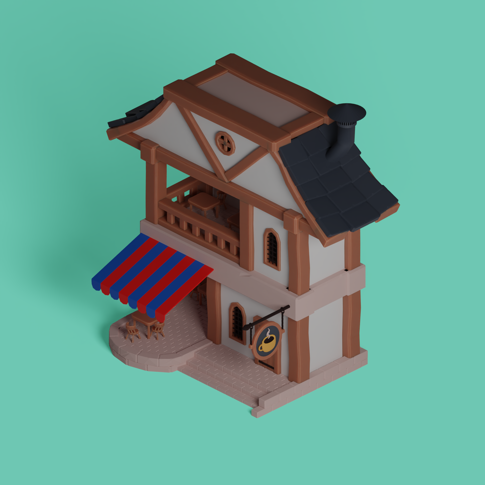

Contained here are my projects related to 3D modeling and shaders
Main Character in Word Wizard
For more information on Word Wizard, see game projects.
T Pose Front View
T Pose Side View
Miko Fleming's Original Drawing
Meko Fleming is the individual who drew this image, and the creator of this character.
Lily Pad Creature

The fur was created using geometry nodes, and all other effects and procedural textures were achieved through the use of blender shader nodes.
Environment with Bike

Texture masks were used to blend between moss, clay, and mud on the ground.
Buildings in Word Wizard
Computer Graphics Club Poster
Geomtry Nodes were used to create the wireframe effect.
Map for Tower Defense Game

Scene was also recreated in Unity, which can be viewed in the game projects tab.
Concept Art for Horror Game

Uses Camera Space for textures, which change with lighting.